Statistics, machine learning and genomics
Source:vignettes/stats-ml-genomics.Rmd
stats-ml-genomics.RmdThis vignette covers the statistical,
machine-learning and genomics
functions. Like the plotting family, the statistical and ML functions
return a ggplot by default and a tidy data frame (with the
fitted model attached as an attribute) when
return.data = TRUE. For the figure functions see
vignette("visualization", package = "micropubr").
library(micropubr)
data(GlobalPatterns, package = "phyloseq")
gp <- phyloseq::prune_taxa(
phyloseq::taxa_sums(GlobalPatterns) > 5, GlobalPatterns)
# GlobalPatterns has no numeric covariates; add a few synthetic ones so the
# Mantel and variance-partitioning examples have something to chew on.
set.seed(1)
meta <- data.frame(phyloseq::sample_data(gp))
meta$pH <- round(runif(nrow(meta), 5, 8), 1)
meta$Temp <- round(runif(nrow(meta), 4, 37), 1)
meta$Depth <- round(runif(nrow(meta), 0, 100), 1)
phyloseq::sample_data(gp) <- phyloseq::sample_data(meta)Multivariate dispersion (PERMDISP)
mp_dispersion() tests whether group dispersions (spread
around the centroid) differ, the assumption behind PERMANOVA. Add
ANOSIM/MRPP/PERMANOVA to the caption with add.test.
mp_dispersion(gp, group.by = "SampleType", add.test = "permanova")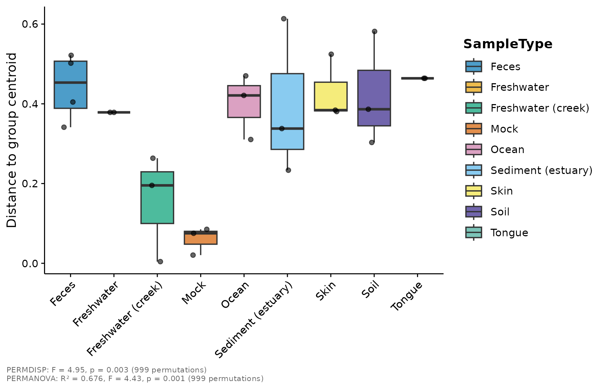
Mantel test
mp_mantel() correlates the community distance matrix
with a distance built from numeric metadata.
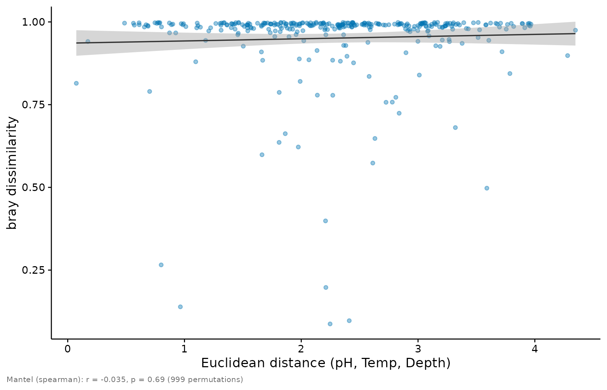
Variance partitioning
mp_varpart() partitions community variation among two or
three explanatory sets (each a vector of metadata columns).
mp_varpart(gp, groups = list(
Chemistry = c("pH", "Temp"),
Habitat = "SampleType"))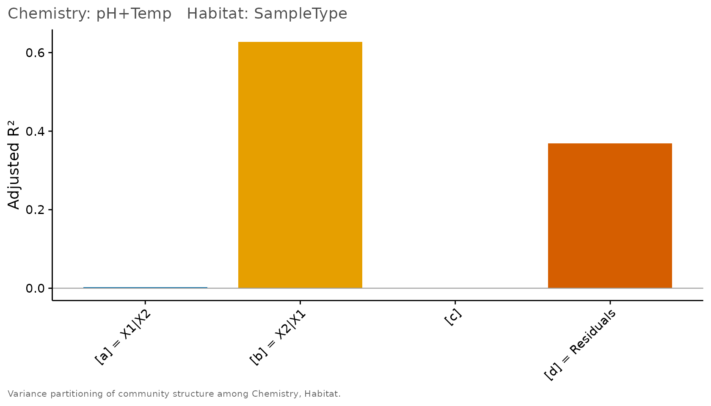
Prevalence and the core microbiome
mp_prevalence() draws a prevalence-abundance scatter
("scatter") or a core-microbiome heatmap across detection
thresholds ("core"). The core taxa are labelled
automatically; pass color.by to colour points by a
taxonomic rank when it has only a handful of levels (colouring by
"Phylum" here would add a 60-entry legend, so we leave it
off).
mp_prevalence(gp, tax.level = "Phylum")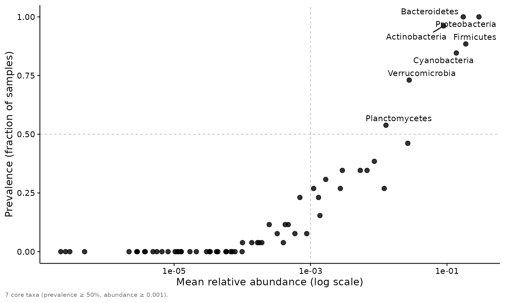
mp_prevalence(gp, tax.level = "Phylum", plot.type = "core")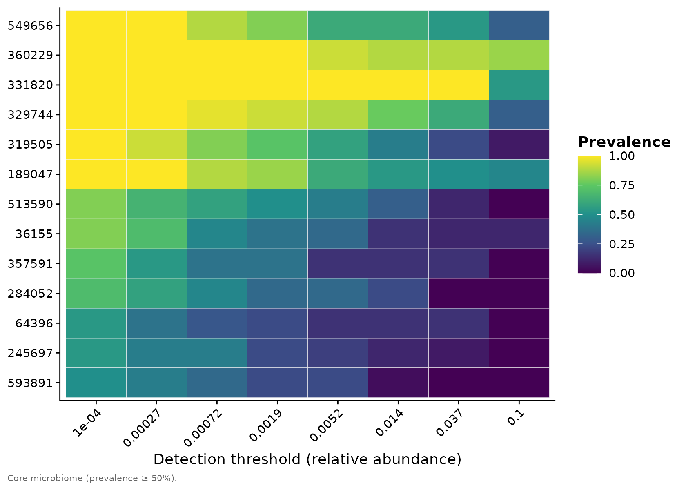
Indicator species
mp_indicator() finds taxa significantly associated with
groups (via indicspecies). (Requires the
indicspecies package.)
mp_indicator(gp, group.by = "SampleType", tax.level = "Genus", top.n = 15)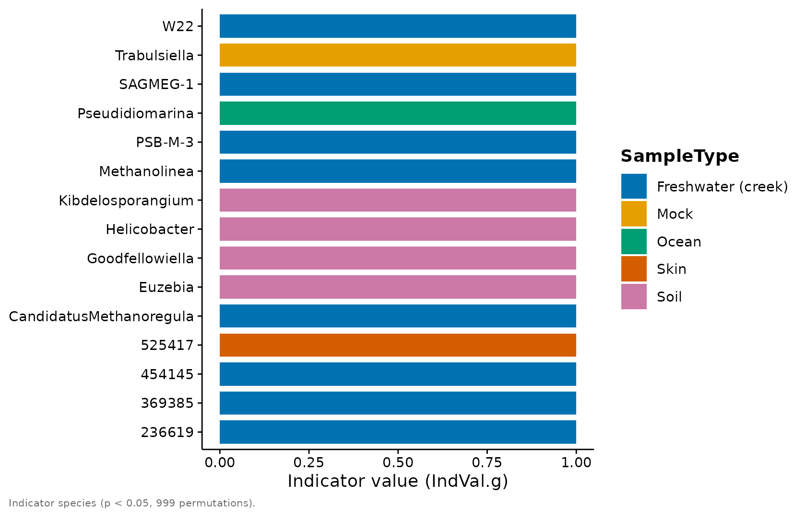
Differential abundance end to end
mp_run_da() tests every taxon for a difference between
groups and returns a tidy table that mp_diff() plots. The
default "wilcox" method (Wilcoxon on centred log-ratios)
needs no extra packages.
da <- mp_run_da(gp, group.by = "SampleType",
method = "wilcox", groups = c("Feces", "Soil"),
tax.level = "Genus")
mp_diff(da, plot.type = "volcano", label.top = 8)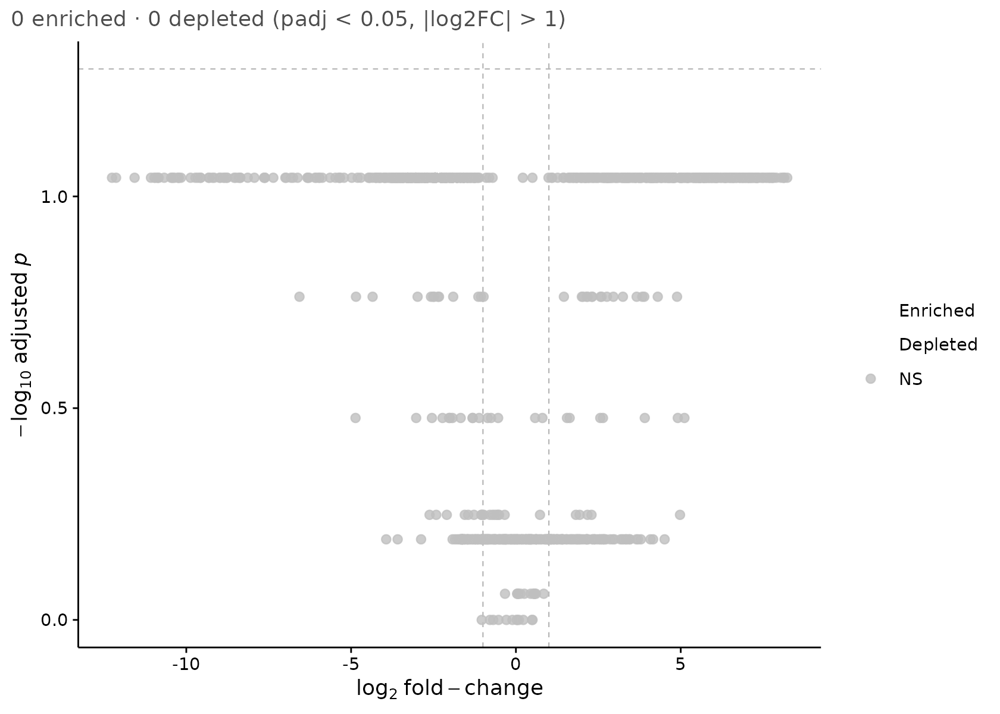
Several groups, several methods
Leave out groups and every level is compared with a
reference (or every pair, with
pairwise = TRUE). Methods are known to disagree, so run
more than one on the same design and look at where they agree.
"lm" fits a linear model to the CLR values and, unlike the
Wilcoxon test, can adjust for covariates (adjust) and model
repeated measures (random).
three <- phyloseq::subset_samples(gp, SampleType %in% c("Feces", "Skin", "Tongue"))
da3 <- mp_run_da(three, group.by = "SampleType", reference = "Skin",
method = c("wilcox", "lm"), adjust = "pH",
tax.level = "Phylum")
head(da3)
#> feature feature_id contrast method log2FC lfcSE
#> 1 Crenarchaeota 71074 Feces vs Skin wilcox -2.3507443 0.9237758
#> 2 Euryarchaeota 227785 Feces vs Skin wilcox 6.2822013 1.7906394
#> 3 Actinobacteria 326977 Feces vs Skin wilcox -1.7588608 1.7082346
#> 4 Spirochaetes 38741 Feces vs Skin wilcox -6.1383758 1.8529022
#> 5 SBR1093 203274 Feces vs Skin wilcox 0.8904921 0.3316668
#> 6 Fusobacteria 64396 Feces vs Skin wilcox -7.8187907 1.5586401
#> pvalue padj mean robust structural_zero
#> 1 0.11428571 0.1714286 1.216788e-04 NA FALSE
#> 2 0.05714286 0.1285714 3.960411e-04 NA FALSE
#> 3 0.62857143 0.6578073 8.802244e-02 NA FALSE
#> 4 0.05714286 0.1285714 1.088199e-03 NA FALSE
#> 5 0.05714286 0.1285714 4.860320e-07 NA FALSE
#> 6 0.05714286 0.1285714 3.378054e-02 NA FALSE
mp_diff(da3, plot.type = "heatmap")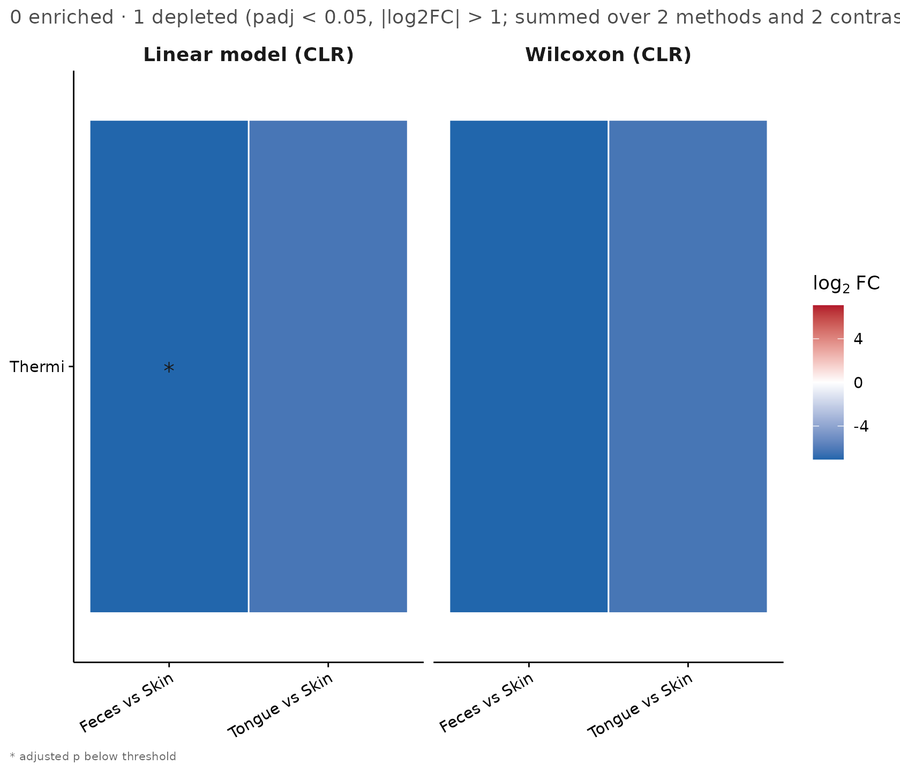
mp_diff(da3, plot.type = "consensus", fc.threshold = 0.5)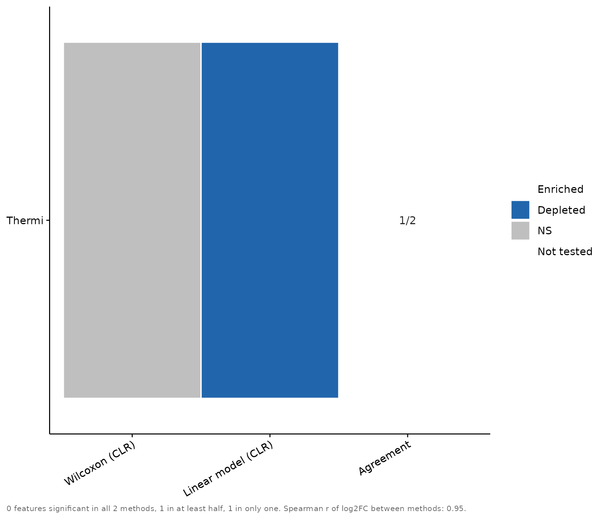
The consensus table behind the figure is available too:
head(mp_diff(da3, plot.type = "consensus", return.data = TRUE))
#> feature feature_id contrast n_methods n_significant n_enriched
#> 1 Thermi 380491 Feces vs Skin 2 1 0
#> 2 Fusobacteria 64396 Feces vs Skin 2 0 0
#> 3 Tenericutes 357591 Feces vs Skin 2 0 0
#> 4 Euryarchaeota 227785 Feces vs Skin 2 0 0
#> 5 Spirochaetes 38741 Feces vs Skin 2 0 0
#> 6 Thermi 380491 Tongue vs Skin 2 0 0
#> n_depleted mean_log2FC consensus agreement
#> 1 1 -7.043335 Depleted 0.5
#> 2 0 -7.633077 NS 0.0
#> 3 0 6.891882 NS 0.0
#> 4 0 6.384392 NS 0.0
#> 5 0 -6.376219 NS 0.0
#> 6 0 -6.248846 NS 0.0"ancombc2" (ANCOM-BC2, which corrects for
sample-specific sampling fractions), "deseq2" and
"aldex2" wrap the respective Bioconductor packages when
they are installed. ANCOM-BC2 also reports taxa that are structurally
absent from a group (plot.type = "zeros") and whether each
result survives its pseudo-count sensitivity analysis (the
robust column; non-robust results are drawn as open
symbols).
da_bc <- mp_run_da(three, group.by = "SampleType", reference = "Skin",
method = c("lm", "ancombc2"), tax.level = "Phylum")
mp_diff(da_bc, plot.type = "zeros")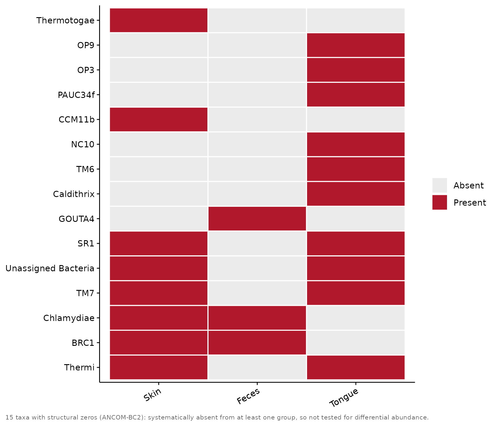
Methods text and statistical guardrails
Every figure records the analysis behind it.
mp_methods() turns those records into a methods paragraph
with software versions and references, and lists any statistical caveats
raised while the figures were made – here, that the groups are
small:
p_alpha <- mp_alpha(gp, measure = "Shannon", group.by = "SampleType",
test = "kruskal")
p_diff <- mp_diff(da3, plot.type = "heatmap")
mp_methods(p_alpha, p_diff)
#> Alpha diversity (Shannon) was estimated for 26 samples with phyloseq (McMurdie
#> and Holmes 2013). Differences among the 9 SampleType groups (Feces, n = 4;
#> Freshwater, n = 2; Freshwater (creek), n = 3; Mock, n = 3; Ocean, n = 3;
#> Sediment (estuary), n = 3; Skin, n = 3; Soil, n = 3; Tongue, n = 2) were
#> tested with the Kruskal-Wallis test (Kruskal and Wallis 1952), followed by
#> pairwise Dunn's tests (Dunn 1964) adjusted with the Benjamini-Hochberg
#> procedure (Benjamini and Hochberg 1995) (rstatix; Kassambara 2026).
#> Differential abundance among SampleType groups (Skin, n = 3; Feces, n = 4;
#> Tongue, n = 2) was tested for the contrasts Feces vs Skin and Tongue vs Skin
#> on taxa agglomerated at the Phylum level detected in at least 10% of samples
#> (45 taxa) using Wilcoxon rank-sum tests (Wilcoxon 1945) on centred log-ratio
#> (CLR)-transformed counts (pseudocount 1; Aitchison 1986) and linear models on
#> CLR-transformed counts (Aitchison 1986). Models were adjusted for pH; the
#> Wilcoxon test cannot include covariates and was run unadjusted. P-values were
#> adjusted within each method and contrast with the Benjamini-Hochberg
#> procedure (Benjamini and Hochberg 1995); features with an adjusted p-value
#> below 0.05 and an absolute log2 fold change above 1 were considered
#> differentially abundant. Figures were produced in R 4.6.1 (R Core Team 2026)
#> with micropubr 0.3.0 (Daniilidis 2026) and ggplot2 4.0.3 (Wickham 2016), with
#> phyloseq 1.56.0 and rstatix 1.1.0.
#>
#> References
#> Aitchison J (1986). The Statistical Analysis of Compositional Data. Chapman and
#> Hall, London.
#> Benjamini Y, Hochberg Y (1995). Controlling the false discovery rate: a
#> practical and powerful approach to multiple testing. Journal of the Royal
#> Statistical Society Series B 57: 289-300.
#> Daniilidis K (2026). micropubr: a unified grammar for publication-ready
#> microbiome visualization in R. R package version 0.3.0.
#> https://github.com/daniilidisK/micropubr
#> Dunn OJ (1964). Multiple comparisons using rank sums. Technometrics 6: 241-252.
#> Kassambara A (2026). rstatix: Pipe-Friendly Framework for Basic Statistical
#> Tests. R package version 1.1.0.
#> Kruskal WH, Wallis WA (1952). Use of ranks in one-criterion variance analysis.
#> Journal of the American Statistical Association 47: 583-621.
#> McMurdie PJ, Holmes S (2013). phyloseq: an R package for reproducible
#> interactive analysis and graphics of microbiome census data. PLoS ONE 8:
#> e61217.
#> R Core Team (2026). R: A Language and Environment for Statistical Computing. R
#> Foundation for Statistical Computing, Vienna, Austria.
#> Wickham H (2016). ggplot2: Elegant Graphics for Data Analysis. Springer-Verlag,
#> New York.
#> Wilcoxon F (1945). Individual comparisons by ranking methods. Biometrics
#> Bulletin 1: 80-83.
#>
#> Statistical notes
#> * Group(s) Feces (n = 4), Freshwater (n = 2), Freshwater (creek) (n = 3), Mock
#> (n = 3), Ocean (n = 3), Sediment (estuary) (n = 3), Skin (n = 3), Soil (n =
#> 3), Tongue (n = 2) have fewer than 5 samples; group comparisons have little
#> power and their p-values are unstable at this size.
#> * Group(s) Skin (n = 3), Feces (n = 4), Tongue (n = 2) have fewer than 5
#> samples; differential-abundance tests have little power and unstable variance
#> estimates at this size.
#> * The Wilcoxon test cannot adjust for covariates or repeated measures;
#> `adjust`/`random` were ignored and its results are unadjusted.mp_alt_text() describes a figure for readers who cannot
see it:
mp_alt_text(p_alpha)
#> [1] "Box plots of Shannon, coloured by SampleType (9 categories), based on 26 data rows. Median Shannon is highest in Soil (6.57) and lowest in Tongue (3.29). Statistics: Kruskal-Wallis, p = 0.005."Machine learning
mp_ml() trains a random forest ("rf") or
gradient-boosted trees ("xgb") on the feature table. The
task is detected from the response: a categorical group.by
gives classification, a numeric one
regression. (Requires randomForest or
xgboost, and pROC for ROC curves.)
gp_genus <- phyloseq::tax_glom(gp, "Genus")
# Which genera discriminate sample types?
mp_ml(gp_genus, group.by = "SampleType", method = "rf",
n.features = 15, seed = 1)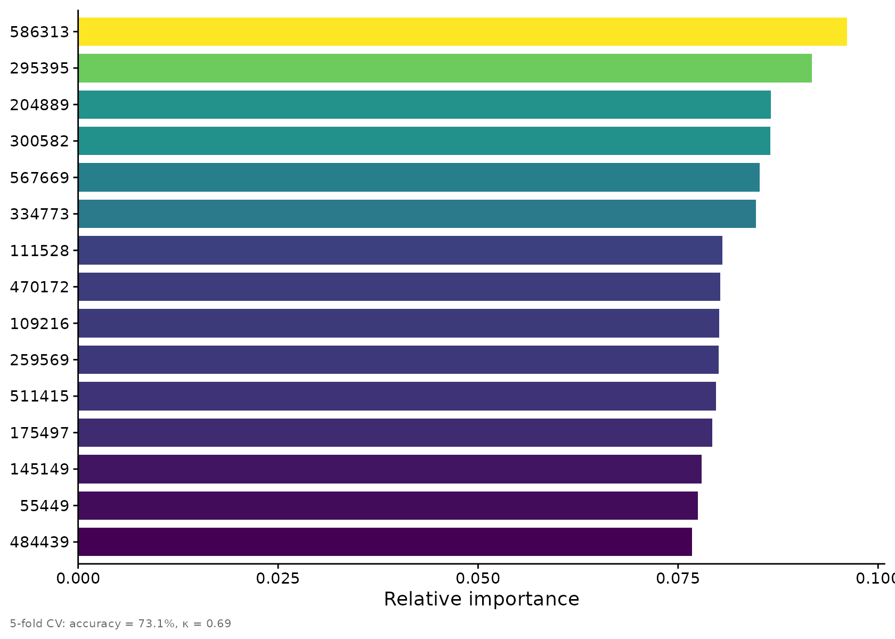
A two-class problem gives an ROC curve from out-of-fold predictions:
two <- phyloseq::subset_samples(gp_genus, SampleType %in% c("Feces", "Soil"))
mp_ml(two, group.by = "SampleType", plot.type = "roc", seed = 1)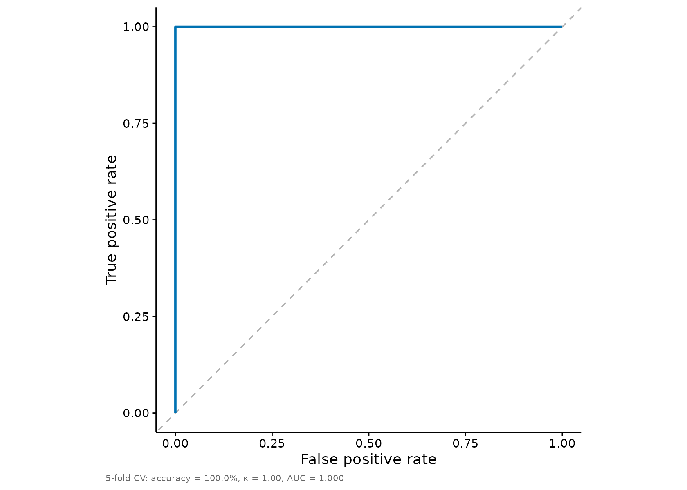
A numeric response switches to regression, scored by RMSE / R-squared:
mp_ml(gp_genus, group.by = "pH", method = "rf",
plot.type = "prediction", seed = 1)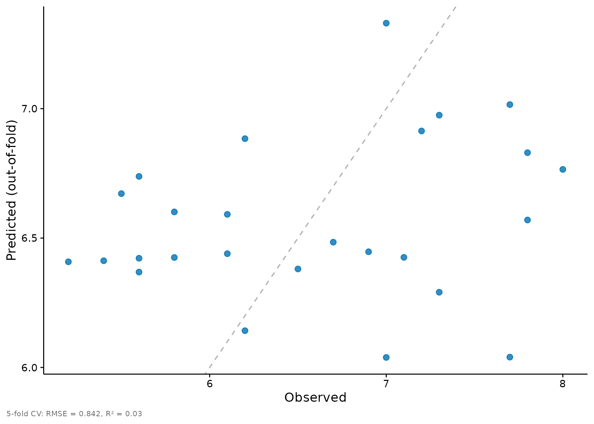
return.data = TRUE hands back the importance table with
the fitted model, cross-validation predictions and metrics attached as
attributes:
Coverage plots
mp_coverage() draws sequencing depth across a genome
from a data frame, samtools depth, bedGraph/BED files, or a
BAM (via Rsamtools).
set.seed(1)
cov <- data.frame(
contig = rep(c("contig1", "contig2"), each = 100),
position = rep(seq(1, 10000, length.out = 100), 2),
depth = c(rpois(100, 60), rpois(100, 25)))
mp_coverage(cov, format = "data.frame")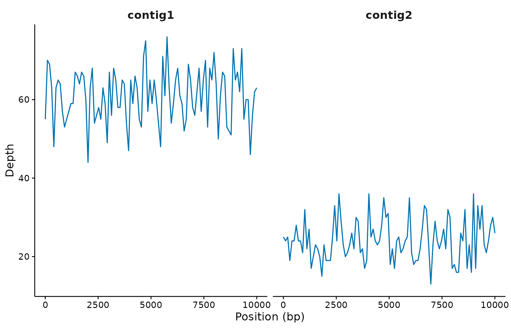
Circular genome plots
mp_circos() assembles an ideogram with optional
coverage, GC, heatmap and annotation tracks plus weighted ribbon links.
(Requires circlize.)
genome <- data.frame(contig = c("c1", "c2", "c3"),
length = c(8000, 5000, 3000))
covc <- do.call(rbind, lapply(genome$contig, function(ct) {
L <- genome$length[genome$contig == ct]
data.frame(contig = ct, position = seq(1, L, 50),
value = runif(length(seq(1, L, 50)), 10, 90))
}))
links <- data.frame(contig1 = "c1", start1 = 500, end1 = 1500,
contig2 = "c2", start2 = 1000, end2 = 2000,
weight = 0.8)
mp_circos(genome, coverage = covc, links = links, link.by = "weight",
coverage.type = "area")Chord diagrams
mp_chord() links the top taxa to the levels of a
grouping variable, ribbon width proportional to mean relative abundance.
(Requires circlize.)
mp_chord(gp, group.by = "SampleType", tax.level = "Phylum", top.n = 10)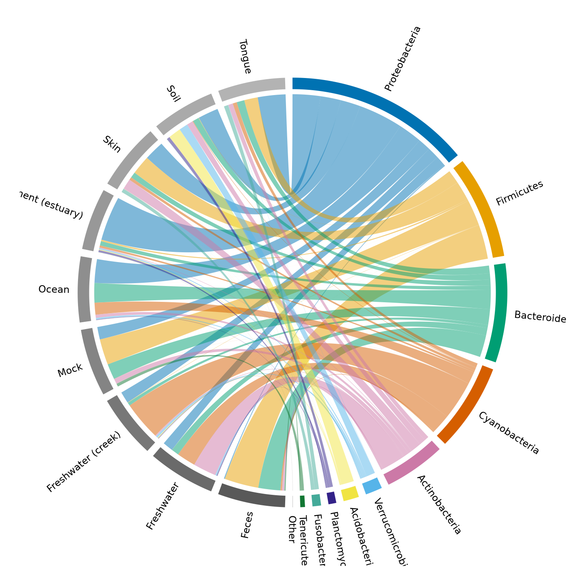